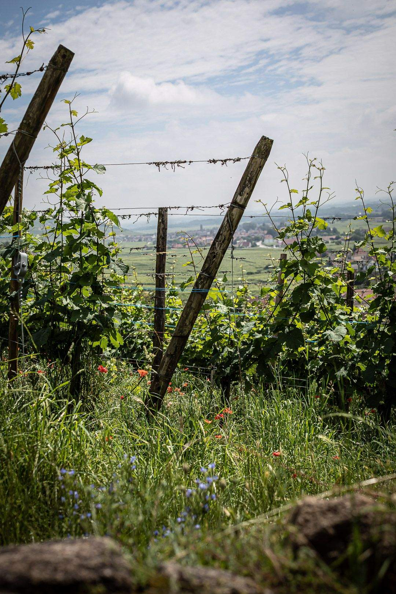
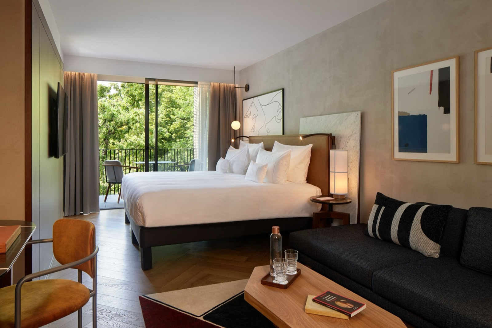
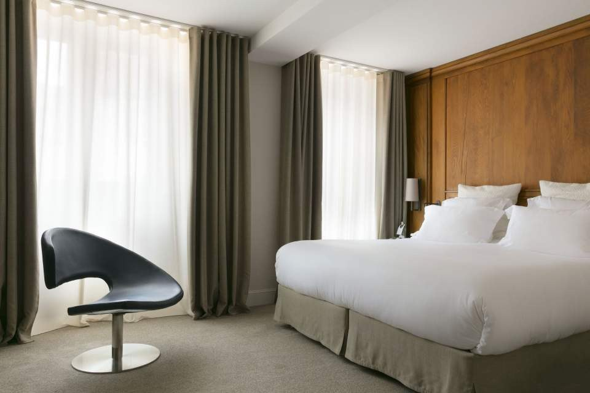
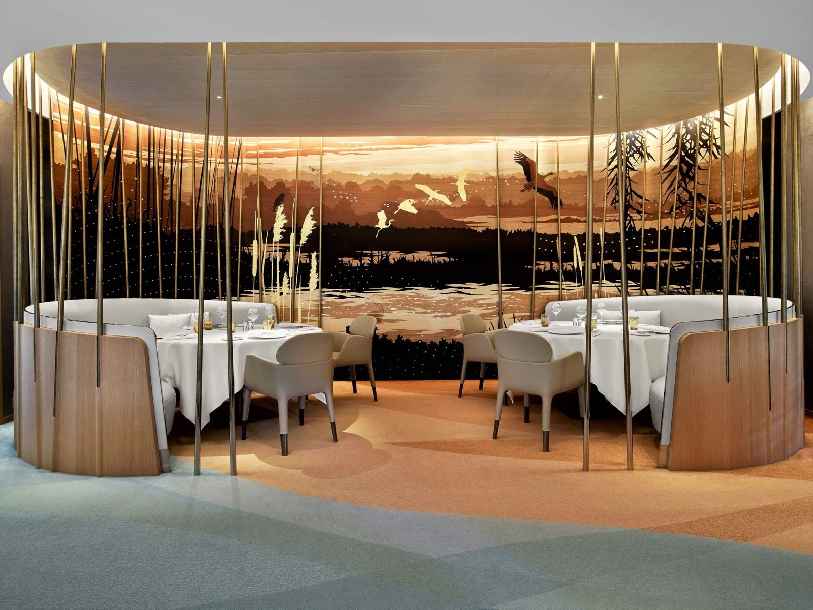

Meilleurs hôtels à Colmar : 7 adresses classées en 2026
Cinq étoiles au Guide MICHELIN dans un rayon de vingt kilomètres, une demeure de 1609 et
une Renaissance de 1543. Et une adresse célèbre que nous ne recommandons pas cette année,
pour une raison simple.
Par Swann Bertaud, rédacteur hôtellerie de luxe✺Publié le 26 août 2026✺15 min de lecture
La cour du Colombier, en Petite Venise. Photo : Hôtel Le Colombier, site
officiel.
L'essentielTrois adresses, et une mise en garde
Le Chambard, Kaysersberg, 9,4/10 : la meilleure note de toute notre
couverture alsacienne. Deux étoiles MICHELIN, un spa et une winstub dans le même
bâtiment.
L'Esquisse Hôtel & Spa MGallery, Colmar, 8,9/10 : le seul grand spa
de la ville, 500 m², et le JY'S, deux étoiles, à deux pas de la Petite Venise.
La Maison des Têtes, Colmar, 8,8/10 : 1609, cent six têtes de pierre en
façade, Relais & Châteaux, et le Girardin, une étoile.
Le Château d'Isenbourg à Rouffach ne figure pas dans ce classement.
Il apparaît encore dans la plupart des sélections en ligne, mais il est fermé pour
rénovation complète, et ne rouvrira pas avant début 2028. Nous y revenons en fin
d'article.
Colmar a un problème que peu de villes touristiques assument : le colombage se vend tout
seul, et beaucoup d'hôtels s'en contentent. Les sept adresses de ce palmarès font autre chose.
Nous les classons par le Score LMHS sur 10 et l'Indice Charme
Alsacien sur 5, le même que dans notre palmarès
régional des hôtels de charme en Alsace. Trois de ces maisons y figurent déjà : leurs notes
sont reprises à l'identique, sans recalcul, pour qu'une même adresse ne porte
jamais deux notes différentes sur ce site.
Notre sélection : les 7 meilleurs hôtels de Colmar et alentour
01

Le Chambard, Kaysersberg, la meilleure de la Route des Vins 9,4/10
9-13 rue du Général de Gaulle, 68240 Kaysersberg · 5 étoiles · Relais & Châteaux · à 15 km de Colmar
268 à 549 €/nuit, fourchette reprise de notre palmarès alsacien.
C'est la meilleure adresse de la Route des Vins, et la seule de la région à réunir deux étoiles, un spa et une winstub dans le même bâtiment. La demeure, du XVIIIe siècle, se tient au cœur de l'un des plus beaux villages de France, et aligne colombages, poutres et boiseries sans jamais tomber dans le décor de carte postale. La rénovation conduite par Patricia Nasti a donné des chambres à tons chauds, papiers peints baroques et matériaux bruts, loin du pastiche régional. Le restaurant gastronomique est dirigé par Olivier Nasti, Meilleur Ouvrier de France, et distingué de deux étoiles au Guide MICHELIN ; la winstub sert la tarte à l'oignon et la choucroute. Le spa de 200 m² dispose d'une piscine à débordement, d'un sauna, d'un hammam et de soins Camille Becht. Le bémol : quinze kilomètres séparent Kaysersberg du centre de Colmar, donc voiture obligatoire si vous venez pour la ville. Pour les gastronomes et pour qui préfère le vignoble à la foule.
Note reprise de notre palmarès alsacien · 2 étoiles MICHELIN · Spa 200 m² et piscine · Winstub ·
Site officiel →
02

L'Esquisse Hôtel & Spa MGallery, le seul grand spa de la ville 8,9/10
Parc du Champ-de-Mars, 68000 Colmar · 5 étoiles · MGallery
216 à 539 €/nuit, fourchette reprise de notre palmarès alsacien.
Ouvert en juillet 2021 au bord du parc du Champ-de-Mars, à quelques minutes de la Petite Venise et du musée Unterlinden. L'hôtel a fait un choix rare à Colmar : ne pas imiter le colombage. Façade métallique verte et dorée, blocs de pierre à l'entrée, voile de cuivre ondulé au desk de réception, masque monumental d'Auguste Bartholdi au-dessus du bar. Le sculpteur de la Statue de la Liberté est né ici, et la maison lui rend hommage plutôt que de pasticher l'Alsace. Le restaurant JY'S, de Jean-Yves Schillinger, est distingué de deux étoiles au Guide MICHELIN et mêle Alsace, États-Unis, Bretagne et Japon. Le spa by Clarins de 500 m² est le plus complet de Colmar : six cabines dont deux doubles, sauna, hammam, jacuzzi, fontaine de glace, solarium, fitness et piscine. Le bémol : le parti pris contemporain laissera de côté ceux qui viennent chercher l'Alsace de carte postale. Pour les couples et pour un séjour spa en ville.
Note reprise de notre palmarès alsacien · JY'S 2 étoiles MICHELIN · Spa Clarins 500 m² · Piscine ·
Site officiel →
03

La Maison des Têtes, 1609 et cent six visages de pierre 8,8/10
19 rue des Têtes, 68000 Colmar · 5 étoiles · Relais & Châteaux
À partir de 250 €/nuit selon les tarifs affichés par la maison.
Bâtie en 1609, la Maison des Têtes doit son nom aux cent six petites têtes de pierre qui couvrent sa façade Renaissance, l'un des morceaux d'architecture civile les plus regardés de Colmar. L'intérieur prend le contrepied : blanc, épuré, presque muséal, pour laisser parler les ouvrages d'ébénisterie d'époque conservés dans les vingt-et-une chambres. La maison se tient en plein centre, à deux pas du musée Unterlinden. Deux tables cohabitent : la brasserie historique, avec ses alcôves de bois, son poêle de fonte et ses vitraux, où l'on sert les classiques régionaux ; et le restaurant Girardin, une étoile au Guide MICHELIN, sous la direction du chef Eric Girardin, dans une salle blanche où la cuisine travaille le végétal et le terroir. La cour intérieure et sa fontaine ouvrent aux beaux jours. Le bémol : pas de spa, et un parti pris décoratif très blanc qui peut sembler froid. Pour les couples et les amateurs d'architecture.
21 chambres · Girardin 1 étoile MICHELIN · Brasserie historique · Façade de 1609 ·
Site officiel →
04

Hôtel des Berges, Illhaeusern, l'hôtel de l'Auberge de l'Ill 8,7/10
4 rue de Collonges au Mont d'Or, 68970 Illhaeusern · 5 étoiles · à 20 km de Colmar
420 à 770 €/nuit, fourchette reprise de notre palmarès alsacien.
C'est la maison la plus chargée d'histoire gastronomique de la région, au bord de l'Ill, tenue par les Haeberlin depuis plus de cent cinquante ans. Son histoire tient en une date : l'Auberge de l'Ill a perdu sa troisième étoile en 2019, après cinquante et un ans. Depuis, elle en porte deux, et l'Alsace attend toujours son prochain trois étoiles. Marc Haeberlin y sert toujours sa cuisine. L'hôtel compte peu de clés, dont deux singulières : la Maison du Pêcheur, cabane au bord de l'eau avec terrasse, et une caravane Airstream à carapace argentée. Le spa des Saules, installé dans une ancienne grange, abrite une longue piscine chauffée, un hammam, un sauna et quatre cabines au dessin japonisant, avec des soins bio produits en Alsace. Le bémol : vingt kilomètres de Colmar, et des tarifs qui placent la maison hors de portée d'un séjour improvisé. Pour les gastronomes et pour qui cherche l'intimité au bord de l'eau.
Note reprise de notre palmarès alsacien · Auberge de l'Ill 2 étoiles · Spa des Saules · Piscine chauffée ·
Site officiel →
05
Hôtel Le Colombier, la Renaissance en Petite Venise 8,4/10
7 rue de Turenne, 68000 Colmar · 4 étoiles · Indice Charme Alsacien 4,3/5
À partir de 224 €/nuit selon les offres affichées par la maison.
Le Colombier occupe une demeure Renaissance de 1543, en pleine Petite Venise, le quartier de canaux et de maisons à colombages qui fait l'image de Colmar. L'intérieur assume le mélange : sculpture contemporaine dans le hall, couleurs chaudes, mobilier actuel dans un bâti classé par l'usage. La cour intérieure, avec sa fontaine et son pavillon de verre, est le vrai argument de la maison : on y prend un verre dès que la météo l'autorise, à quelques mètres des canaux et pourtant à l'abri du flot des visiteurs. Le petit-déjeuner met en avant des producteurs locaux. Le bémol, et il compte à ce tarif : ni restaurant ni spa. Pour les couples qui veulent dormir dans la Petite Venise plutôt que la visiter.
Demeure de 1543 · Petite Venise · Cour intérieure et fontaine · Sans restaurant ni spa ·
Site officiel →
14 rue des Augustins, 68000 Colmar · 4 étoiles · Indice Charme Alsacien 4,1/5
À partir de 110 €/nuit, le tarif d'entrée le plus bas de ce palmarès.
Une ancienne pharmacie du XIXe siècle convertie en boutique-hôtel de treize chambres et suites, au cœur de la vieille ville, à deux pas du musée Bartholdi. Le parti pris décoratif mêle l'architecture d'origine à un mobilier contemporain, avec une boutique d'objets de design au rez-de-chaussée, un petit bar et une salle de petit-déjeuner. Le spa, d'inspiration japonaise, se privatise : les clients y disposent d'une heure d'accès privé, avec sauna, hammam et salle de luminothérapie. C'est une formule inhabituelle, et plus intéressante qu'un grand spa partagé pour qui cherche le calme. Le bémol : treize clés seulement, donc peu de disponibilités, et pas de restaurant. Pour les couples et pour un premier séjour à Colmar sans y consacrer un gros budget.
13 chambres · Ancienne pharmacie du XIXe · Spa privatif, sauna, hammam, luminothérapie ·
Site officiel →
07
Grand Hôtel Bristol, 1912, face à la gare 7,9/10
7 place de la Gare, 68000 Colmar · 4 étoiles · Indice Charme Alsacien 3,9/5
À partir de 120 €/nuit.
Construit en 1912, le Bristol occupe un bâtiment haussmannien qui n'a rien d'alsacien, et c'est précisément ce qui le distingue dans une ville saturée de colombage. Hauteur sous plafond, marbre, laiton, et à l'entrée une fresque de la manufacture Zuber qui donne le ton. Quatre-vingt-onze chambres et suites, ce qui en fait le plus grand de ce palmarès et le seul réellement adapté aux groupes et aux familles. La brasserie l'Auberge est une institution de la ville, avec la choucroute et la bouchée à la reine ; le café Zuber prolonge l'atmosphère Belle Époque. Côté bien-être, un sauna, un hammam et une salle de fitness, avec terrasse. Le bémol : la place de la Gare n'est pas la Petite Venise, et l'échelle de la maison lui ôte l'intimité des adresses précédentes. Pour les familles, les séjours courts et les budgets tenus.
91 chambres · Bâtiment de 1912 · Fresque Zuber · Brasserie l'Auberge · Sauna et hammam ·
Site officiel →
L'adresse qu'il ne faut pas réserver cette année
Le Château d'Isenbourg, à Rouffach, figure encore dans la quasi-totalité des
sélections d'hôtels de Colmar publiées en ligne. Sa vue sur le vignoble, ses cinq hectares de
vignes et sa salle panoramique installée dans l'ancienne orangerie en font une adresse
légitimement citée. Sauf que l'établissement est fermé.
Le château a fermé ses portes pour une rénovation complète, et son
exploitant annonce une réouverture début 2028. Nous le signalons parce que
c'est exactement le genre d'information qu'un classement doit donner : la maison rouvrira, elle
aura probablement sa place dans une prochaine édition, mais elle n'a rien à faire dans une
liste d'adresses à réserver en 2026. Nous la réévaluerons à sa réouverture.
Tableau comparatif : hôtels de Colmar 2026
Hôtel
Étoiles
Prix/nuit
Score LMHS
Table étoilée
Spa
Distance du centre
Pour qui
Le Chambard, Kaysersberg
5
268-549 €
9,4/10
2 étoiles
200 m², piscine
15 km
Gastronomie, vignoble
L'Esquisse MGallery
5
216-539 €
8,9/10
JY'S, 2 étoiles
Clarins 500 m²
Centre
Spa, couples
La Maison des Têtes
5
250 €+
8,8/10
Girardin, 1 étoile
Non
Centre
Architecture, table
Hôtel des Berges, Illhaeusern
5
420-770 €
8,7/10
Auberge de l'Ill, 2 étoiles
Des Saules, piscine
20 km
Gastronomie, intimité
Hôtel Le Colombier
4
224 €+
8,4/10
Non
Non
Petite Venise
Couples, emplacement
Hôtel Quatorze
4
110 €+
8,1/10
Non
Privatif
Centre
Budget, intimité
Grand Hôtel Bristol
4
120 €+
7,9/10
Non
Sauna, hammam
Place de la Gare
Familles, groupes
Classement par Score LMHS. Les notes du Chambard, de L'Esquisse et de l'Hôtel
des Berges, ainsi que leurs fourchettes de prix, sont reprises à l'identique de notre
palmarès des hôtels de charme en
Alsace. Autres informations relevées le 26 août 2026 sur les sites officiels et auprès du
Guide MICHELIN.
Protocole LMHS : comment nous avons classé ces hôtels
L'Indice Charme Alsacien, noté sur 5, est celui de notre palmarès régional.
Il repose sur cinq marqueurs vérifiables : le bâti, l'ancrage territorial, la table régionale,
l'échelle de la maison et la cohérence entre le décor et l'histoire du lieu. Le Score
LMHS sur 10 évalue la globalité, réserves comprises, et relève de la
grille LMHS Destination.
Ce palmarès est documentaire. Nous n'avons pas effectué de séjour de
contrôle pour cette édition. Catégories, capacités, tables, distinctions et équipements ont été
relevés le 26 août 2026 sur les sites officiels et auprès du Guide MICHELIN. Aucun partenariat
commercial, aucune affiliation.
Colmar : ce qu'il faut savoir avant de réserver
Le centre ancien se parcourt à pied en une journée : la Petite Venise, la collégiale
Saint-Martin, la Maison Pfister et le musée Unterlinden, qui abrite le retable
d'Issenheim et justifie à lui seul le déplacement. Quatre des sept adresses de ce palmarès sont
en ville ; les trois autres, Kaysersberg, Illhaeusern et la Route des Vins, demandent une
voiture.
Saisonnalité. Avril et mai pour les terrasses sans la foule, septembre et
octobre pour les vendanges et les couleurs du vignoble. Décembre est un cas à part :
les marchés de Noël font de Colmar l'une des villes les plus fréquentées de France sur quatre
semaines, les tarifs doublent et les disponibilités partent au printemps précédent. Si vous
venez pour les marchés, réservez avant l'été. Si vous venez pour la ville, évitez décembre.
Dans Colmar même, c'est L'Esquisse Hôtel & Spa MGallery,
8,9/10 : le seul grand spa de la ville, 500 m² signés Clarins, et le
JY'S, distingué de deux étoiles au Guide MICHELIN. Si
vous acceptez de rouler quinze minutes, Le Chambard à Kaysersberg obtient
une note supérieure, 9,4/10, la meilleure de toute notre couverture
alsacienne.
Quel hôtel de Colmar a le meilleur spa ?
L'Esquisse, sans concurrence dans la ville : 500 m²,
six cabines dont deux doubles, sauna, hammam, jacuzzi, fontaine de glace, solarium, salle
de fitness et piscine, avec des soins Clarins. Hors de Colmar, Le Chambard
propose 200 m² avec piscine à débordement et soins Camille Becht, et l'Hôtel des
Berges un spa installé dans une ancienne grange, avec longue piscine chauffée. À
noter que l'Hôtel Quatorze propose une formule différente : un spa
privatisé à l'heure, plus intime qu'un grand espace partagé.
Combien de restaurants étoilés dans les hôtels de Colmar et alentour ?
Cinq étoiles réparties sur trois maisons. Le JY'S, à
L'Esquisse, en détient deux. Le restaurant d'Olivier Nasti
au Chambard, à Kaysersberg, en détient deux. L'Auberge de
l'Ill, à Illhaeusern, en détient deux depuis qu'elle a perdu sa
troisième en 2019, après cinquante et un ans. Et le Girardin, à la Maison
des Têtes, en détient une.
Quel hôtel choisir pour dormir dans la Petite Venise ?
L'Hôtel Le Colombier est le seul de ce palmarès réellement situé dans
la Petite Venise, dans une demeure Renaissance de 1543, avec une cour
intérieure qui met à l'abri du passage. L'Esquisse et La Maison
des Têtes sont à quelques minutes à pied, en centre ancien. Attention toutefois :
le Colombier n'a ni restaurant ni spa, ce qui pèse à son niveau de
tarif.
Peut-on encore réserver au Château d'Isenbourg à Rouffach ?
Non. Le château est fermé pour rénovation complète, et
son exploitant annonce une réouverture début 2028. Il figure pourtant
encore dans la plupart des sélections d'hôtels de Colmar publiées en ligne. Nous ne
l'intégrons pas à ce classement pour cette raison, et le réévaluerons à sa réouverture.
Quelle est la meilleure période pour réserver à Colmar ?
Avril et mai, ou septembre et octobre : terrasses,
vendanges et couleurs du vignoble, sans la foule. Décembre est à traiter à
part : les marchés de Noël placent Colmar parmi les villes les plus fréquentées de
France pendant quatre semaines, les tarifs doublent et les chambres partent dès le
printemps précédent. Réservez avant l'été si vous venez pour les marchés, évitez décembre
si vous venez pour la ville.
Le mot de SwannLe colombage se vend tout seul, et c'est le problème
Colmar est une ville qui n'a pas besoin de se donner du mal pour remplir ses hôtels, et beaucoup d'adresses en profitent : une façade à pans de bois, trois géraniums, et le tour est joué. Ce qui distingue les maisons de ce classement, c'est qu'aucune ne se contente de ça. L'Esquisse a eu le courage de ne pas faire d'Alsace du tout, et de rendre hommage à Bartholdi plutôt qu'au colombage. La Maison des Têtes garde une façade de 1609 et met du blanc partout à l'intérieur. Le Chambard réinvente la winstub au lieu de la momifier. Un dernier mot, qui vaut avertissement : j'ai trouvé le Château d'Isenbourg dans presque toutes les sélections de Colmar en ligne. Il est fermé jusqu'en 2028. Personne ne l'avait vérifié.
Swann Bertaud, rédacteur hôtellerie de luxe
Méthode et sources
7 adresses de Colmar et de ses environs classées par le Score LMHS sur 10,
issu de la grille LMHS Destination, et par l'Indice Charme Alsacien sur 5,
celui de notre palmarès régional. Aucun séjour de contrôle n'a été effectué pour
cette édition. Les notes et fourchettes de prix du Chambard, de
L'Esquisse et de l'Hôtel des Berges sont reprises à
l'identique de notre palmarès des hôtels
de charme en Alsace, afin qu'une même adresse ne porte jamais deux notes différentes sur
ce site. Catégories, capacités, tables, distinctions et équipements relevés le 26 août 2026
sur les sites officiels et auprès du Guide MICHELIN. La fermeture du Château d'Isenbourg a
été vérifiée auprès de son exploitant. Aucun partenariat commercial, aucune affiliation.
Photographies : sites officiels des établissements.
7 adressesIndice Charme Alsacien /5Sans séjour de contrôle0 partenariat